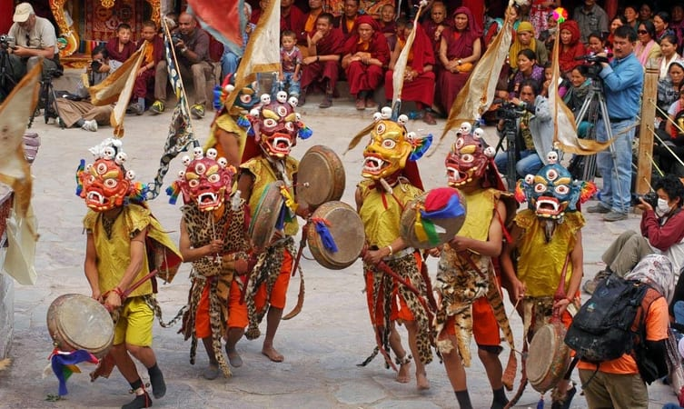

Sindhu Darshan

Sindhu Darshan is a three-day festival organised on a full moon night in the month of June to commemorate the river Indus as a symbol of communal harmony and unity in India. Whilst promoting tourism in Ladakh, it is also revered as a proud salute to the brave soldiers who have been fighting bravely for our safety.